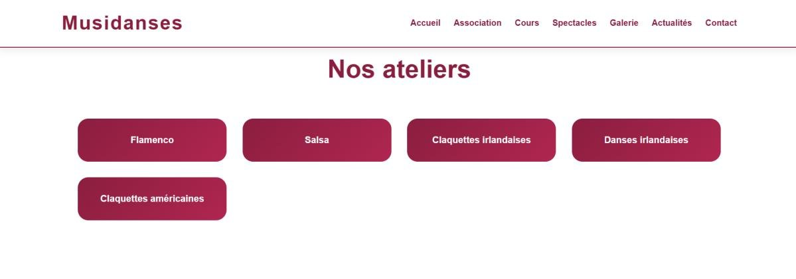

Musidanses – Refonte du site Internet
Musidanses est une association culturelle de Chilly-Mazarin (91) qui propose des cours de flamenco, de salsa, de claquettes et de danses irlandaises. Son site était vieillissant : ma mission était d'en créer une nouvelle version plus moderne, plus claire et plus facile à mettre à jour.
- Analyse de l'ancien site et des informations à garder
- Nouvelles rubriques : Accueil, Association, Cours, Spectacles, Galerie, Actualités, Contact
- Menu de navigation et boutons vers chaque discipline
- Galerie photos avec effet au survol et bouton « Voir plus »
- Mise en page en CSS3, adaptée aux mobiles et tablettes
- Tests sur plusieurs navigateurs et tailles d'écran


